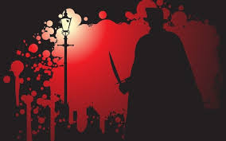
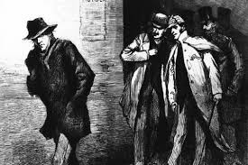

Jack the Ripper was an unidentified serial killer active in the largely impoverished areas in and around the Whitechapel district of London in 1888. In both the criminal case files and contemporary journalistic accounts, the killer was called the Whitechapel Murderer and Leather Apron....Attacks ascribed to Jack the Ripper typically involved female prostitutes who lived and worked in the slums of the East End of London whose throats were cut prior to abdominal mutilations. The removal of internal organs from at least three of the victims led to proposals that their killer had some anatomical or surgical knowledge. And there were proper evidences indicating that the murders were connected and were being done by the same criminal.

1888 was a bad year to be a prostitute. Between August 7 and November 10 of that year, five women were killed in the Whitechapel district of London's East End, their throats slashed and their bodies mutilated in a way that indicated they all met their fates at the hands of the same person. One victim's kidney was even mailed to the police, along with a series of taunting notes penned by someone calling himself Jack the Ripper.Some of the most horific murders were-: 1.Canonical five 2.Later Whitechapel murders and many more such murders...investigors believe that there were more than 100 cases committed by him..
The investigation was initially conducted by the Metropolitan Police Whitechapel (H) Division Criminal Investigation Department (CID) headed by Detective Inspector Edmund Reid. After the murder of Nichols, Detective Inspectors Frederick Abberline, Henry Moore, and Walter Andrews were sent from Central Office at Scotland Yard to assist. The City of London Police were involved under Detective Inspector James McWilliam after the Eddowes murder, which occurred within the City of London.The overall direction of the murder enquiries was hampered by the fact that the newly appointed head of the CID Robert Anderson was on leave in Switzerland between 7 September and 6 October, during the time when Chapman, Stride, and Eddowes were killed.This prompted Metropolitan Police Commissioner Sir Charles Warren to appoint Chief Inspector Donald Swanson to coordinate the enquiry from Scotland Yard.
In addition to the contradictions and unreliability of contemporary accounts, attempts to identify the murderer are hampered by the lack of any surviving forensic evidence.DNA analysis on extant letters is inconclusive;the available material has been handled many times and is too contaminated to provide meaningful results.There have been mutually incompatible claims that DNA evidence points conclusively to two different suspects, and the methodology of both has also been criticised.The concentration of the killings around weekends and public holidays and within a short distance of each other has indicated to many that the Ripper was in regular employment and lived locally.Others have thought that the killer was an educated upper-class man, possibly a doctor or an aristocrat who ventured into Whitechapel from a more well-to-do area.The case was closed in 1892. That hasn't stopped people from suspecting everyone from Sir John Williams, Queen Victoria's royal surgeon, to his wife, Lizzie Williams.According to the Huffington Post, some people believe Lizzie Williams was Jill the Ripper since the reproductive organs of the victims were torn out — and Lizzie was infertile. Other suspects included Lord Randolph Churchill and author Lewis Carroll.

Jack the Ripper, whoever he was, has been the subject of hundreds of books and articles. The theories surrounding his identity vary from a covert Masonic plot to a member of the royal family. Here are the most likely suspects:- 1.Montague Druitt, a barrister with knowledge of human anatomy. Rumored to be insane, he disappeared after the last murder; his body was later found floating in the River Thames. 2.George Chapman, a barber who lived in Whitechapel during the time of the murders and who was later found guilty of poisoning three of his wives. 3.Aaron Kosminski, a Whitechapel resident known for his affinity for prostitutes. He was hospitalized in an asylum several months after the last murder.
But afterall some questions still previal and might not be ever answered like..(MindHunting Questions)
1. Why did he/she killed the victims in that way only....?
2. What was the need to torn out the bodies....?
3. Does the legacy of jack the ripper still prevails....?
For more information on this case-: Click Here